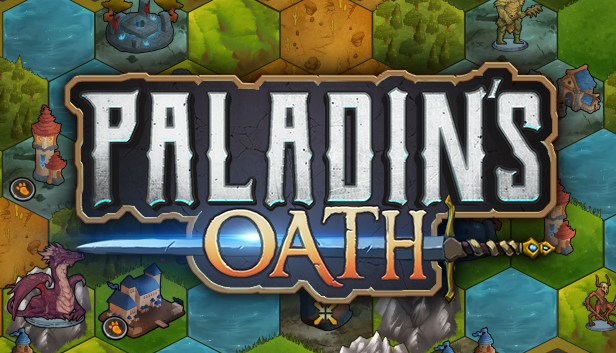

Paladin's Oath
"Paladin's Oath" © Fire Biscuit Gaming, 2022
Complex Strategy Fantasy card game RPG inspired by board games like Mage Knight or Gloomhaven. Combines elements of RPG, light deck-building, puzzle and strategy. Click to find out more!
"-It allowed me to setup simple workflows to work on composite scenes as well as very quickly setup the entire flow of scenes for my game.